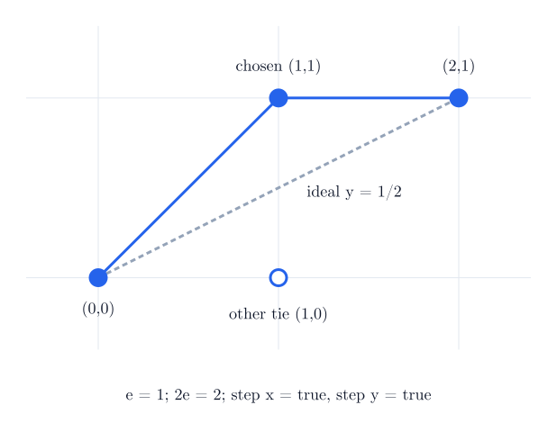
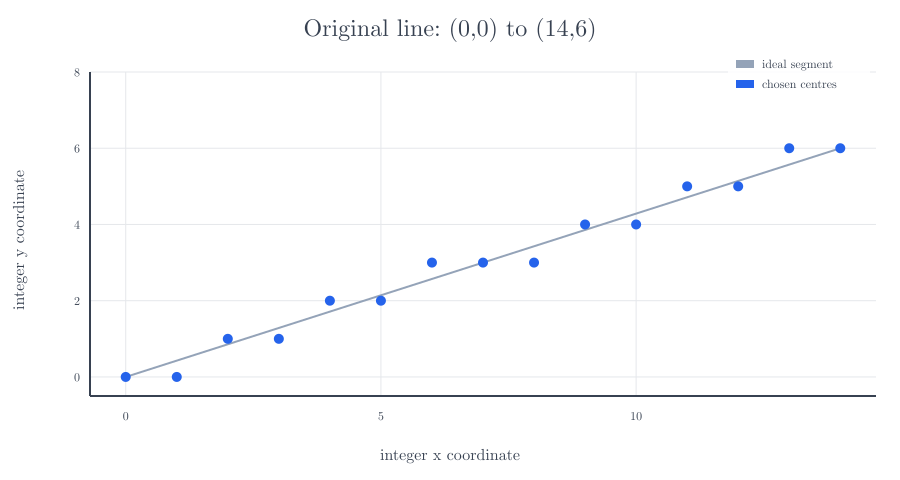
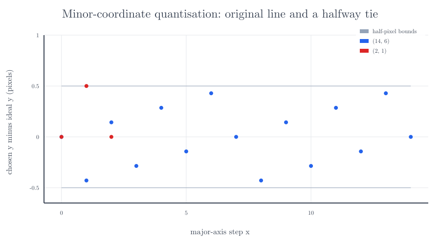

Bresenham Lines: Integer Decisions and Pixel-Centre Ties
Abstract
An integer raster line selects one pixel centre per position along its major axis. Bresenham's method makes those choices with an incremental integer error. A two-step segment first exposes the half-pixel tie convention. The original line from (0,0) to (14,6) then supplies actual errors, selected centres and geometric residuals. Signed-octant controls and exact output counts distinguish the constant working state from the returned vector's storage. Ordinary points and diagnostic records share one canonical native C++ recurrence.
A half-pixel tie: which centre is selected
For the segment (0,0)→(2,1), the ideal height at x=1 is one half. Both centres (1,0) and (1,1) are equally close. This library's directed, inclusive comparison rule selects (1,1): at a tie the minor coordinate moves towards the destination. The diagram uses equal coordinate scales; grey is the ideal segment, and the blue path joins the actual returned centres. Those joins are a visual guide. The hollow point is an equally close centre that this call did not select.
#include <dm/dm.hpp>
int main() {
std::filesystem::create_directories("build");
const auto trace=dm::algorithms::bresenham_line_trace(0,0,2,1);
dm::graphics::Diagram diagram(200,1000);
dm::graphics::DiagramStroke grid;grid.color={226,232,240};grid.width=1;
for (int x=0;x<=2;++x) diagram.path({{double(x),-.4},{double(x),1.4}},grid);
for (int y=0;y<=1;++y) diagram.path({{-.4,double(y)},{2.4,double(y)}},grid);
dm::graphics::DiagramStroke ideal;ideal.color={148,163,184};ideal.width=3;ideal.dashed=true;
diagram.path({{0,0},{2,1}},ideal);
std::vector<dm::graphics::DiagramPoint> centres;
for (const auto& [x,y]:trace.points) centres.push_back({double(x),double(y)});
dm::graphics::DiagramStroke raster;raster.color={37,99,235};raster.width=3;
diagram.path(centres,raster);
for (const auto& point:centres) diagram.ellipse(point,.045,.045,{37,99,235},raster);
diagram.ellipse({1,0},.045,.045,{255,255,255},raster)
.text({0,-.17},"(0,0)").text({1,1.18},"chosen (1,1)").text({2,1.18},"(2,1)")
.text({1,-.2},"other tie (1,0)").text({1.42,.48},"ideal y = 1/2")
.text({1,-.65},std::format("e = {}; 2e = {}; step x = {}, step y = {}",
trace.steps[0].error,trace.steps[0].doubled_error,trace.steps[0].step_x,trace.steps[0].step_y))
.save_svg("build/bresenham_midpoint.svg");
std::print("Forward centres: {}.\n\nReverse centres: {}.\n",trace.points,
dm::algorithms::bresenham_line(2,1,0,0));
}Forward centres: [(0, 0), (1, 1), (2, 1)].
Reverse centres: [(2, 1), (1, 0), (0, 0)].

The recurrence and a nearest-centre interpretation
Let dx=abs(x1−x0), dy=abs(y1−y0), and let sx and sy point towards the final endpoint. Initialise the signed error to e=dx−dy. At each nonterminal centre, save b=2e and apply both tests to that saved value:
Both tests may fire, producing a diagonal move. The second test uses b from before either move, even if the first move changed e. At the final endpoint, record the centre and stop without moving. The horizontal or vertical case is handled by the same loop, and coincident endpoints produce one centre. Doubling is integer multiplication by the constant two; no slope division, floating-point rounding or general multiplication is needed in the decision loop.
For a shallow line in coordinates directed from the start, write k for the horizontal step count and let r_k be its chosen minor-coordinate offset. The exact nearest-centre rule with this tie convention is
Steep lines exchange the major and minor axes; sign changes translate the relative offsets back to the input coordinates. To derive the midpoint test, compare the ideal next height (k+1)dy/dx with r_k+1/2. Multiplying by 2dx eliminates division. Increasing k adds 2dy to that decision quantity; choosing the next minor centre subtracts 2dx. The recurrence carries this information with additions and integer comparisons. The nearest-centre formula implies an absolute minor-coordinate residual at most one half; a selected centre need not lie exactly on the continuous segment.
Original example: actual centres and saved errors
The original endpoints are (0,0) and (14,6). The output contains fifteen centres, including both endpoints. The table comes from the real native loop, with outgoing flags shown for each current centre; terminal=true means that no move is performed. The last row's doubled error is recorded for inspection but is not used to choose another point.
#include <dm/dm.hpp>
int main() {
std::filesystem::create_directories("build");
const auto trace=dm::algorithms::bresenham_line_trace(0,0,14,6);
std::print("Centres ({}): {}.\n\n",trace.points.size(),trace.points);
std::print("| centre | error e | saved 2e | step x | step y | terminal |\n"
"| :--- | ---: | ---: | :--- | :--- | :--- |\n");
std::vector<double> x,y;
for (const auto& row:trace.steps) {
x.push_back(row.point.first);y.push_back(row.point.second);
std::print("| {} | {} | {} | {} | {} | {} |\n",row.point,row.error,row.doubled_error,row.step_x,row.step_y,row.terminal);
}
dm::graphics::RPlot::create().lines({0,14},{0,6},"ideal segment",dm::RGB{148,163,184},2)
.points(x,y,"chosen centres",dm::RGB{37,99,235},5)
.title("Original line: (0,0) to (14,6)").x_label("integer x coordinate").y_label("integer y coordinate")
.y_limits(-.5,8).size(900,480).save_svg("build/bresenham_line.svg");
}Centres (15): [(0, 0), (1, 0), (2, 1), (3, 1), (4, 2), (5, 2), (6, 3), (7, 3), (8, 3), (9, 4), (10, 4), (11, 5), (12, 5), (13, 6), (14, 6)].
| centre | error e | saved 2e | step x | step y | terminal |
|---|---|---|---|---|---|
| (0, 0) | 8 | 16 | true | false | false |
| (1, 0) | 2 | 4 | true | true | false |
| (2, 1) | 10 | 20 | true | false | false |
| (3, 1) | 4 | 8 | true | true | false |
| (4, 2) | 12 | 24 | true | false | false |
| (5, 2) | 6 | 12 | true | true | false |
| (6, 3) | 14 | 28 | true | false | false |
| (7, 3) | 8 | 16 | true | false | false |
| (8, 3) | 2 | 4 | true | true | false |
| (9, 4) | 10 | 20 | true | false | false |
| (10, 4) | 4 | 8 | true | true | false |
| (11, 5) | 12 | 24 | true | false | false |
| (12, 5) | 6 | 12 | true | true | false |
| (13, 6) | 14 | 28 | true | false | false |
| (14, 6) | 8 | 16 | false | false | true |

After a horizontal offset h and vertical offset v, the recorded state obeys
Every x update subtracts dy and every y update adds dx, so this invariant follows immediately from the initial state. It also explains why e is not itself a geometric distance: it combines the extents with both offsets. The native tests verify this invariant for every record in their small and random rational-oracle comparisons.
All octants, directions and endpoint controls
Each signed pair below starts at the origin. Swapping the axes exercises steep lines; changing the signs covers the other octants. The original steep (3,10) and diagonal (7,7) controls are retained, followed by axis-aligned and coincident endpoints. Each trace counts actual x, y and joint moves. There is one joint move for every minor-axis update, so the diagonal count equals the smaller extent. Counts include no outgoing move from the final endpoint.
#include <dm/dm.hpp>
int main() {
std::print("| endpoint | centres | x updates | y updates | diagonal updates |\n"
"| :--- | ---: | ---: | ---: | ---: |\n");
for (const auto& [x,y]:std::vector<dm::algorithms::GridPoint>{{6,2},{2,6},{-2,6},{-6,2},{-6,-2},{-2,-6},{2,-6},{6,-2},
{3,10},{7,7},{5,0},{0,-5},{0,0}}) {
const auto trace=dm::algorithms::bresenham_line_trace(0,0,x,y);
if (trace.points.size()!=dm::algorithms::bresenham_point_count(0,0,x,y)) return 1;
std::print("| {} | {} | {} | {} | {} |\n",dm::algorithms::GridPoint{x,y},trace.points.size(),
trace.x_moves,trace.y_moves,trace.diagonal_moves);
}
const int lo=std::numeric_limits<int>::min(),hi=std::numeric_limits<int>::max();
std::print("\nInclusive count across the full int x range: {}.\n",
dm::algorithms::bresenham_point_count(lo,0,hi,0));
try {
dm::algorithms::bresenham_line_trace(lo,0,hi,0,100);
return 1;
} catch (const std::length_error&) {
std::print("The 100-point limit rejects that complete raster before allocation.\n");
}
}| endpoint | centres | x updates | y updates | diagonal updates |
|---|---|---|---|---|
| (6, 2) | 7 | 6 | 2 | 2 |
| (2, 6) | 7 | 2 | 6 | 2 |
| (-2, 6) | 7 | 2 | 6 | 2 |
| (-6, 2) | 7 | 6 | 2 | 2 |
| (-6, -2) | 7 | 6 | 2 | 2 |
| (-2, -6) | 7 | 2 | 6 | 2 |
| (2, -6) | 7 | 2 | 6 | 2 |
| (6, -2) | 7 | 6 | 2 | 2 |
| (3, 10) | 11 | 3 | 10 | 3 |
| (7, 7) | 8 | 7 | 7 | 7 |
| (5, 0) | 6 | 5 | 0 | 0 |
| (0, -5) | 6 | 0 | 5 | 0 |
| (0, 0) | 1 | 0 | 0 | 0 |
Inclusive count across the full int x range: 4294967296. The 100-point limit rejects that complete raster before allocation.
Endpoint differences and doubled errors are evaluated in widened 64-bit arithmetic, covering the full range of 32-bit int coordinates. Widening happens before subtraction, avoiding the signed-int overflow possible in the old implementation. Output coordinates remain ints and retain their original ordering. No clipping, antialiasing or intensity calculation is performed. This output is not a supercover of every cell touched by the ideal segment.
Quantisation error and output cost
For the original shallow line, compare each chosen height with 6x/14. For the short tie example, compare it with x/2. The signed residual is in pixel units along the minor axis, rather than perpendicular distance to the line. Both obey the half-pixel bound, and the short example attains it. No floating-point quantity influences which centres the native integer algorithm selects.
#include <dm/dm.hpp>
int main() {
std::filesystem::create_directories("build");
auto plot=dm::graphics::RPlot::create();
plot.lines({0,14},{.5,.5},"half-pixel bounds",dm::RGB{148,163,184},1)
.lines({0,14},{-.5,-.5},"",dm::RGB{148,163,184},1);
std::print("| endpoint | centres | maximum absolute minor residual |\n| :--- | ---: | ---: |\n");
for (const auto& [end,colour]:std::vector<std::pair<dm::algorithms::GridPoint,dm::RGB>>{
{{14,6},{37,99,235}},{{2,1},{220,38,38}}}) {
const auto points=dm::algorithms::bresenham_line(0,0,end.first,end.second);
std::vector<double> index,residual;double max_error=0;
for (const auto& [x,y]:points) {
const double error=y-double(end.second)*x/end.first;
if (std::abs(error)>.5+1e-12) return 1;
index.push_back(x);residual.push_back(error);max_error=std::max(max_error,std::abs(error));
}
plot.points(index,residual,std::format("{}",end),colour,4);
std::print("| {} | {} | {:.6f} |\n",end,points.size(),max_error);
}
plot.title("Minor-coordinate quantisation: original line and a halfway tie")
.x_label("major-axis step x").y_label("chosen y minus ideal y (pixels)")
.y_limits(-.65,1).size(900,500).save_svg("build/bresenham_residuals.svg");
std::print("\n| major extent M | returned centres | actual outgoing decisions |\n| ---: | ---: | ---: |\n");
for (int major:{0,1,2,4,8,16,32,64,128}) {
const auto trace=dm::algorithms::bresenham_line_trace(0,0,major,major/3);
if (trace.steps.size()!=std::size_t(major)+1) return 1;
std::print("| {} | {} | {} |\n",major,trace.points.size(),trace.steps.size()-1);
}
}| endpoint | centres | maximum absolute minor residual |
|---|---|---|
| (14, 6) | 15 | 0.428571 |
| (2, 1) | 3 | 0.500000 |
| major extent M | returned centres | actual outgoing decisions |
|---|---|---|
| 0 | 1 | 0 |
| 1 | 2 | 1 |
| 2 | 3 | 2 |
| 4 | 5 | 4 |
| 8 | 9 | 8 |
| 16 | 17 | 16 |
| 32 | 33 | 32 |
| 64 | 65 | 64 |
| 128 | 129 | 128 |

With M=max(dx,dy), every major-axis coordinate advances exactly once per nonterminal iteration, so the algorithm emits M+1 centres and makes M outgoing decisions. Work is O(M+1). Its working arithmetic state is O(1), while the returned vector uses O(M+1) storage. The trace adds a record of constant size per centre. The optional positive trace point limit checks the complete count before allocation; zero means no caller limit. Allocation failures propagate, and no partial segment is returned. The input is deterministic and requires no observational dataset or random seed.
Reference and verification
J. E. Bresenham (1965), Algorithm for computer control of a digital plotter, IBM Systems Journal 4(1), 25–30, [doi:10.1147/sj.41.0025](https://doi.org/10.1147/sj.41.0025), [original paper](https://janmr.com/files/papers/bresenham65.pdf). The source develops incremental integer decisions and octant transforms; this report inspects the library's compact symmetric all-octant recurrence with its existing directed tie rule.
Native tests compare all 14,641 endpoint pairs in the square [-5,5]² with an independent exact-rational nearest-centre formula. They also check signed extremes on short segments, full-range counts and preflight limits, reversed ties, axis exchange, the original centres, saved-error invariants and 1,000 random moderate segments. All eight focused cases pass the undefined-behaviour sanitizer. Every report block is an editable complete C++ programme; figures are local SVG files, not text dumped into the results.